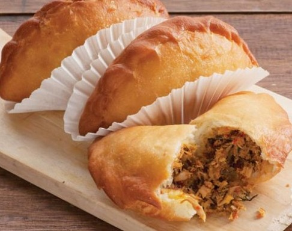

Panada

Deep friend embreaded heaven!
Local delicacy that was highly influenced by either Portuguese or Spanish Cuisine. This kind of empanadas is
different from it's ancestor! Instead of baked, it is deep fried, and the use of local ingredients makes it
unique taste!
Let's make some breads and fry 'em!
Ingredients
Serving for 10 panadas
Filling:
- 100 grams tuna, steamed then shredded
- 1 onion finely chopped
- 2 garlics finely chopped
- 1 red chilli finely chopped
- 2 birdeye chillies finely chopped
- Salt
- Pepper
- Sugar
- Granulated chicken bouillon
Dough:
- 500 grams flour
- 27 grams powdered milk mix with 2 tbsp of water
- 2 tbsp butter
- 1 egg yolk
- 3 tbsp sugar
- 1 pinch salt
- 2 tbsp yeast
- Some water
- Oil for frying
Steps
- Dough: add the flour into a bowl, add in the yeast, sugar, yolk and milk. Mix until combined. Then add in
the water, butter and salt. Mix again until combined and smooth. Shape into a ball. Put in a warm place to
prove. Cover with a damp kitchen towel.
- Filling: heat the oil in a pan, add in the onion, garlic, chillies and fish. Stir to combine and don't
forget to lightly smash it. Add in the seasonings. Have a taste test to your likings. Turn off the heat. Set
aside.
- When the dough is ready, divide it into 10. make into balls then flattened them one by one.
- Take about 2 tbsp of the fillings, take a dough. Put the fillings into the dough.
- Close the dough so it resembles half a circle then close the dough pinching the sides (please reffer to
Youtube or Google for a better explanations)
- Do it until everything is finished.
- Heat some oil. after the oil is hot, fry the doughs until they are golden brown on each side. About 2
minutes each. Serve with some chilli sambal or mayo or birdeye chillies.
Going up!
Take me Home!